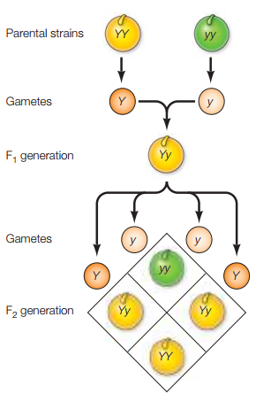
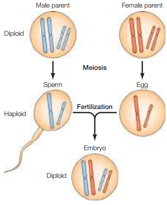
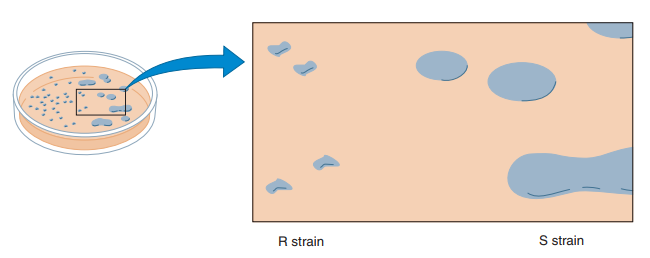
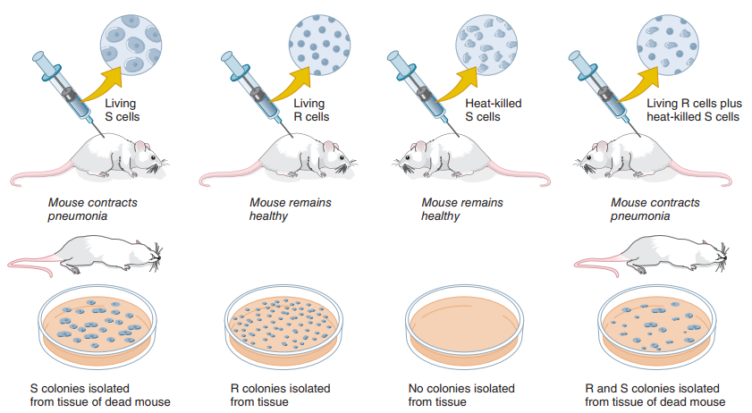
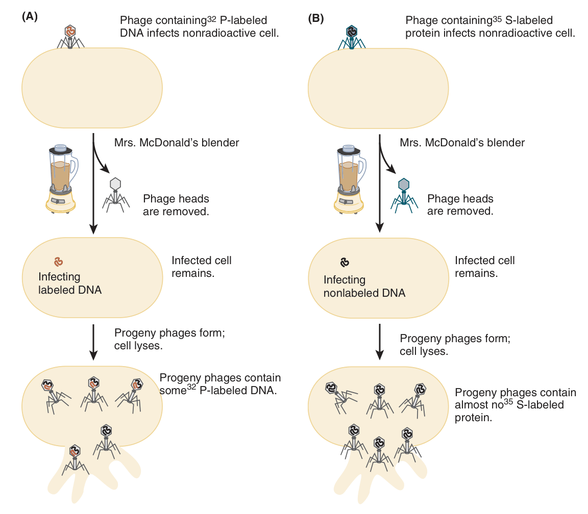
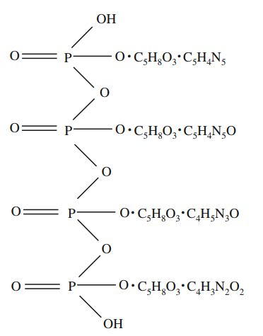
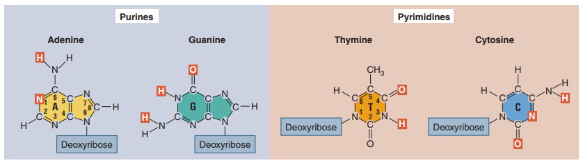
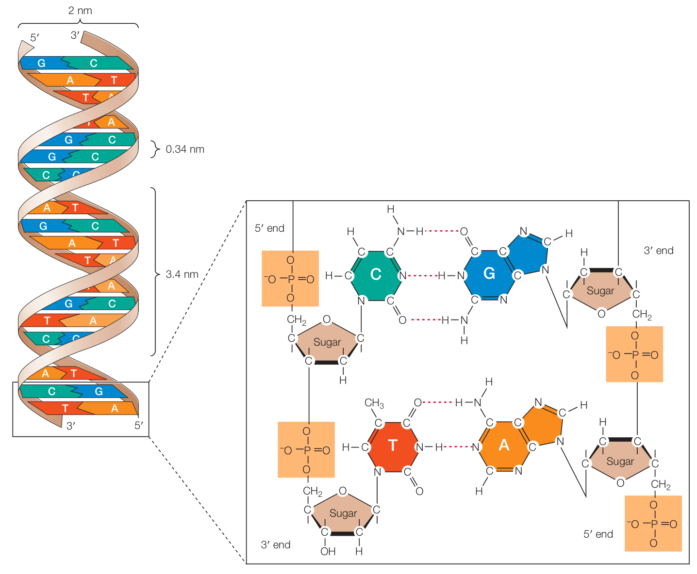

APÉNDICE SOBRE FISIOLOGÍA CELULAR
Una vista de la biología molecular desde Cooper (2019), Parte I: Material genético y ADN
Esta serie se enfoca en el capítulo 4 de Cooper (2019), que usaremos para estudiar las bases de la biología molecular moderna y complementaremos con fuentes secundarias en la medida que sea pertinente para desarrollar una imagen un poco más completa del campo.
Según Cooper (2019), la biología molecular se interesa en entender los mecanismos responsables por la transmisión y expresión de “información genética” que gobierna las estructuras y funciones celulares. Partiendo de la observación de que todos los organismos comparten un número de propiedades básicas a nivel molecular, el campo emplea organismos modelos simples para estudiar estos mecanismos y extrapolarlos a otros a pesar de diferencias marcadas como, por ejemplo, realizar modelos de transcripción genética en la Escherichia coli y utilizarlos como guías para entender este mismo fenómeno en seres humanos. De acuerdo con Cooper (2019), una serie de experimentos ha apoyado la validez o, más bien, la legitimidad de esta suposición sobre la continuidad molecular entre diferentes especies.
Todos los organismos se reproducen, y al hacerlo sus descendientes heredan “información genética” que especifica sus estructuras y funciones. Puesto que todas las células emergen de células preexistentes, el material genético debe ser replicado y transmitido de la célula madre a la célula hija.
La versión más básica y útil de un modelo de herencia es propuesta por Mendel, donde pares de factores hereditarios (ahora llamados genes) son responsables por los patrones de herencia exhibidos por la progenie de dos parientes. Una copia del gen, llamado alelo, especifica el rasgo heredado de cada ascendiente. A modo ilustrativo:
Es posible decir que, a pesar de que el alelo recesivo no se expresa (ya que las semillas son amarillas), este sigue siendo parte de la composición genética de la generación F1. Esto se puede comprobar realizando un cruce entre dos plantas de esta generación, dando paso a la generación F2. Esta segunda generación híbrida se caracterizará por el hecho de que la razón de plantas con semilla amarilla y verde será de 3:1 respectivamente (Figura 1).
Figura 1. Combinación de alelos dominantes y recesivos en las generaciones F1 y F2 (Cooper, 2019, p. 114).
Las Tablas 1 y 2 ilustran el fenómeno observado en términos de cuadros de Punnett.
Tabla 1. Cuadro de Punnett para el genotipo de la generación F1.
| Y | Y | |
|---|---|---|
| y | Yy | Yy |
| y | Yy | Yy |
Según la Tabla 1, puesto que toda combinación de YY y yy incluye un alelo dominante Y, toda la progenie del cruce YY yy exhibirá semillas de color amarillo aunque posean el alelo de las semillas color verde.
Tabla 1. Cuadro de Punnett para el genotipo de la generación F2.
| Y | y | |
|---|---|---|
| Y | YY | Yy |
| y | Yy | yy |
Por otro lado, la Tabla 2 ilustra cómo el cruce de dos plantas F1 con genotipo Yy pueden arrojar combinaciones de una planta con solamente copias del alelo dominante (YY), dos plantas con una copia tanto del alelo dominante como recesivo (Yy) y, por último, una planta con dos copias del alelo recesivo. Ya que 3 de 4 contienen el gen dominante y solo 1 contiene únicamente copias del gen recesivo, se deduce que la razón de plantas con semilla amarilla y verde será de 3:1 respectivamente.
Hoy en día se dice que los cromosomas son los portadores de los genes. La mayoría de las células en las plantas superiores y animales son diploides (2n), lo cual quiere decir que se tiene dos copias de cada cromosoma. En estos organismos, las células deben dividen a través de la meiosis para producir células germinales haploides (por ejemplo, espermatozoides y óvulos), a decir, con una sola copia de cada cromosoma (n). En la fertilización, dos células germinales forman un solo embrión diploide, combinando las copias tanto del espermatozoide como del óvulo (véase Figura 2).
Figura 2. Cambios en los cromosomas durante la meiosis y la fertilización (Cooper, 2019, p. 115).
A principios del siglo XX, no solo se redescubrió el trabajo de Mendel, sino que también se propusieron los cromosomas como portadores de genes. Puesto que el “comportamiento” de los cromosomas en plantas superiores y animales paralela el de los genes en la teoría mendeliana, con estos copiándose y recombinándose durante la fertilización, esa razonable suponer que los genes radican en ellos. El trabajo en la Drosophila melanogaster hasta el 1915 ayudó a cimentar más aún la idea de las bases cromosómicas de la herencia.
Empero, aunque se aceptaba la base cromosómica, aún no se creía en la base nucleica. Cabe resaltar, como se verá a mayor detalle más adelante, que los cromosomas se componen tanto de ácidos nucleicos como de proteínas. En este periodo de la biología celular y molecular se tenía conocimiento de la existencia de cuatro clases principales de biomoléculas: carbohidratos, lípidos, ácidos nucleicos y proteínas.
Reconstruyendo de manera muy elemental la cadena de razonamiento del periodo, preguntarse por la base molecular de los factores hereditarios requería atender a lo que se sabía sobre cada una de estas biomoléculas y a lo que se pensaba sobre el proceso de transmisión de información genética. Dado que los fenotipos podían diferir enormemente entre organismos (por ejemplo, entre E. coli y una planta superior), el material hereditario debía poseer suficiente diversidad interna para dar cuenta de tal variabilidad. Además, la complejidad de muchos rasgos sugería la necesidad de largas cadenas capaces de almacenar información diferenciada.
Tomando en cuenta estas consideraciones, los carbohidratos no podían cumplir este papel, ya que solo tienden a formar homopolímeros como el glucógeno, el almidón, la celulosa y la quitina. Mientras que los primeros tres se componen de cadenas de nada más que glucosa, la quitina es un homopolímero de N-acetilglucosamina (el mismo de las paredes celulares bacterianas junto con el ácido N-acetilmurámico). Por ello, la homogeneidad de los carbohidratos no era apropiada como la implementación física de la información genética.
Por otro lado, los lípidos no forman polímeros y los ácidos nucleicos tienen apenas cuatro variantes principales (adenina, citosina, guanina, timina), lo cual abría paso a la monotonía química de modelos como el tetranucleótido de Levene. Viendo que existen 20 aminoácidos canónicos comunes, los cuales pueden combinarse de maneras variables para formar heteropolímeros con alta diversidad funcional, la conclusión más lógica del momento radicó en suponer una base proteínica del material genético.
Uno de los experimentos más importantes que, por accidente, permitió el posterior descubrimiento del ADN como material genético fue realizado por Fred Griffith en 1928. Griffith (1928) descubrió el principio de transformación, según el que bacterias de una cepa pueden adquirir rasgos fenotípicos asociados con bacterias de otra cepa, algo que llamó transformación. En sus estudios, Griffith trabajó con la especie bacteriana Streptococcus pneumoniae, conocida por sus cepas que causan un tipo de neumonía bacteriana en mamíferos. Estas cepas infecciosas poseen cápsulas gelatinosas de polisacáridos que las protegen del sistema inmune del organismo infectado. En culturas de medios sólidos, esta cepa de bacteria forma colonias que, por sus cápsulas gelatinosas, tienen una forma lisa, razón por la cual se les llama cepa S (de smooth). Otra cepa de S. pneumoniae, la cepa R, es incapaz de sintetizar esta cápsula, y al organizarse en colonias tienen una forma más rugosa, razón por la que se les dice cepa R (Figura 3). Ya que no tienen la cápsula protectora, al infectar un organismo son desactivadas por el sistema inmune de este y, por ende, no causan neumonía bacteriana (Hartl, 2020).
Figura 3. Diferencias entre las colonias de S. pneumoniae de cepa R y S a la izquierda y derecha respectivamente (Hartl, 2020, p. 3).
Cuando ratones son inyectados con bacterias de la cepa R vivas o con bacterias de la cepa S que han sido matadas con calor, estos no enferman ni mueren. No obstante, Griffith (1928) observó que los ratones pueden enfermarse y morir si son inyectados con una mezcla de bacterias de cepa R vivas y bacterias de cepa S muertas. Al tomar muestras de la sangre de los ratones muertos y hacer cultivos de sus bacterias, Griffith observó una vez más las colonias lisas típicas de la cepa S, a pesar de que todas las células de aquella cepa que habían sido inyectadas estaban muertas. En términos modernos, sabemos que esto se da por transferencia genética horizontal. Para Griffith, esto es el principio de transformación, y el mecanismo era desconocido: las bacterias de la cepa R simplemente se transformaban en bacterias de la cepa S, y las características nuevas eran heredadas por sus descendientes. La Figura 4 ilustra el diseño experimental.
Figura 4. Diseño experimental de Griffith (1928) para ilustrar el principio de transformación. Ratones inyectados con bacterias de cepa S vivas mueren. Colonias aisladas del tejido de este ratón en cultivos son lisas. Ratones inyectados con bacterias de cepa R vivas sobreviven y las colonias aisladas de muestras de tejido forman colonias rugosas. Ratones inyectados con bacterias de cepa S matadas con calor sobreviven y, al tomar tejidos de ellos y realizar cultivos, no se aíslan colonias. Por último, ratones inyectados con bacterias de cepa R vivas y bacterias de cepa S matadas con calor mueren y, al aislar colonias de muestras de sus tejidos, se observan tanto colonias rugosas como lisas a pesar de que las bacterias de la cepa S estaban muertas al inyectarse (Hartl, 2020, p. 4).
Con base en este descubrimiento, el trabajo posterior de Avery, MacLeod & McCarty (1944) cimentó experimentalmente el ADN como el responsable por el cambio de las bacterias de cepa R a bacterias de cepa S. Para ello, emplearon un extracto de bacterias de cepa S muertas por calor que contenía principalmente ADN con un poco de proteína y ARN. A una muestra de este extracto añadieron ribonucleasa (RNasa) para destruir el ARN, mientras que a otra muestra añadieron proteinasa para destruir la proteína y, por último, a una tercera muestra añadieron desoxirribonucleasa (DNasa) para destruir el ADN. Al cultivar bacterias de la cepa R en presencia de un extracto celular de cepa S alterado por RNasa o proteinasa, el resultado era el mismo: colonias tanto de bacterias de cepa R como de cepa S. No obstante, al cultivar bacterias de la cepa R en presencia de un extracto celular de cepa S alterada por DNasa, el resultado era diferente: solo colonias de bacterias de cepa R son producidas.
Posteriormente, Hershey & Chase (1952) realizaron un experimento que le dio más legitimidad a la tesis del ADN como el material genético. Para su trabajo necesitaron de bacterias E. coli y un virus bacteriófago llamado T2, el cual se compone de una cabeza y una cola. Los autores ya sabían que la infección de T2 ocurre a través de la adhesión de la cola de la partícula a la pared celular bacteriana, por la cual el material del bacteriófago se inserta al interior. Una vez el material del T2 entra a la bacteria, este se multiplica y se libera a través de lisis de la célula huésped. Del mismo modo, los autores entendían que el T2 se compone tanto de ADN como de proteínas en más o menos la misma cantidad (Hartl, 2020).
Una característica importante del ADN y de las proteínas es que, mientras que el ADN tiene fósforo pero no azufre, las proteínas suelen tener azufre pero no fósforo. Hershey & Chase lo sabían, así que para determinar si el ADN o el fósforo entran a la bacteria cuando el T2 se adhiere a su pared celular, produjeron partículas conteniendo ADN radiactivo al infectar bacterias E. coli que fueron cultivadas durante varias generaciones en un medio con 32P, un isótopo radiactivo de fósforo. Del mismo modo, produjeron partículas conteniendo proteína radiactiva al infectar bacterias E. coli que fueron cultivadas durante varias generaciones en otro medio con 35S, un isótopo de azufre radiactivo.
Posteriormente, en un experimento ilustrado en la Figura 5, los investigadores extrajeron la progenie de los T2 radiactivos e infectaron bacterias E. coli no radiactivas para seguir el flujo del 32P (parte A) y del 35S (parte B). Una vez infectadas, los investigadores usaron centrifugación para separar las partículas desprendidas de T2 de las bacterias. Posteriormente, las bacterias infectadas fueron resuspendidas en un medio fresco y luego sometidas a una licuadora de cocina facilitada por Margaret McDonald para generar un flujo turbulento, cuyas fuerzas de cizalla desprendieron mecánicamente el material bacteriófago aún adjunto a las paredes celulares bacterianas. Posteriormente, a través de centrifugación las células infectadas fueron separadas de las partículas de T2 desprendidas.
Las células infectadas fueron examinadas posteriormente, descubriendo que la radiactividad de los bacteriófagos marcados con 32P fue encontrada en las bacterias asociadas, mientras que solo una pequeña fracción de la radiactividad por 35S fue encontrada en las bacterias infectadas. El hecho de que gran cantidad del ADN marcado fue retenido mientras que las proteínas no implica que las T2 inyectan su ADN en vez de las proteínas en el interior de las bacterias, y que por ende el material responsable en la multiplicación del T2 dentro de la bacteria tras infección es el ADN. Ergo, concluyeron, el ADN es el material genético en los bacteriófagos T2. Hoy en día no existen excepciones conocidas a la generalización de que el ADN es el material genético en todos los organismos celulares, a pesar de constante experimentación (Hartl, 2020).
Figura 5. El experimento “licuadora” de Hershey-Chase, el cual demostró que el ADN (y no las proteínas) son responsables de dirigir la reproducción de los bacteriófagos T2 en células E. coli infectadas. El ADN radiactivo es transmitido a la progenie bacteriófaga en cantidades sustanciales, pero las proteínas solo son transmitidas en cantidades negligibles (Hartl, 2020, p. 6).
Al determinar que el ADN es el portador del material genético, cabe preguntarse entonces cuál es su estructura. Se dice que una de las razones por la que fue rechazada la posibilidad del ADN de cumplir esta función radica en el trabajo de Phoebus A. Levene, responsable del modelo tetranucleótido (Hargittai, 2009).
Al estudiar el ácido nucleico de la levadura, Levene dio con una serie de conclusiones que no pudieron ser extrapoladas a otros organismos. Por ejemplo, Levene afirmó que el ácido nucleico tenía la fórmula empírica C38H50O29N15P4 (Hargittai, 2009), sin embargo, los polímeros de ácidos nucleicos varían en longitud y proporción, lo cual implica que una fórmula empírica de este tipo tergiversa la naturaleza de esta clase de biomolécula. Los ácidos nucleicos no son unidades fijas estequiométricas.
Del mismo modo, Levene sugirió que las cuatro bases guanina, adenina, citosina y uracilo ocurrían en proporciones equimoleculares, es decir, de 1:1:1:1 (Hargittai, 2009), lo cual eventualmente fue probado falso por Chargaff en los años 40s.
Aunque Levene no pudo determinar la manera en que los elementos del ácido nucleico se enlazaban, propuso un modelo que hoy en día se conoce como la hipótesis tetranucleótida, ilustrado en la Figura 6.
Figura 6. Fórmula estructural hipotética del tetranucleótido del ácido nucleico en la levadura como fue propuesto por Levene en 1909 (Hargittai, 2009, p. 754).
A pesar de que Levene continuó trabajando en esta área, corrigiendo las fórmulas empíricas y equivocándose únicamente en la citosina por un único átomo de hidrógeno, siguió manteniendo la hipótesis tetranucleótida, la cual hacía ver las estructuras de nucleótidos como químicamente monótonas. Eventualmente la hipótesis fue reemplazada por el modelo de doble hélice diez años gracias a descubrimientos como el de Avery, MacLeod & McCarty (1944).
“The hypothesis did not survive Levene by long. Oswald Avery and his associates established soon, in 1944 [21] that the substance of heredity was DNA. Within a decade then the double helix structure provided the most beautiful evidence for the replication mechanism [22]. The tetranucleotide hypothesis became obsolete, because it was realized that a dull structure in which a four-member unit is being repeated could not carry the plethora of information that must be involved in heredity” (Hargittai, 2009, p. 755).
Otra pieza importante para determinar la estructura del ADN fue descubierta por Erwin Chargaff, quien notó que, a pesar de las variedades relativas con respecto a la cantidad de bases nitrogenadas, en todos los organismos las razones de A a T y de G a C no difieren significativamente de 1:1, lo cual quiere decir que A + G = T + C, o que la cantidad de purinas es igual a la cantidad de pirimidinas. Este descubrimiento fue posteriormente conocido como la ley de las proporciones.
El modelo tridimensional doble helicoidal del ADN fue una deducción de James Watson y Francis Crick en 1953 con el apoyo del trabajo en difracción de rayos X de Rosalind Franklin y Maurice Wilkins, así como también la ley de las proporciones de Chargaff. Al momento, se sabía que el ADN se componía de cuatro bases de ácidos nucleicos, dos purinas (adenina y guanina) y dos pirimidinas (citosina y timina). Lo que las hace purinas o pirimidinas es la cantidad de anillos en la base nitrogenada, con las purinas teniendo dos y las pirimidinas una sola (Figura 7). Cada base nitrogenada se enlaza a un azúcar (desoxirribosa) fosforilado.
Figura 7. Estructura química de la adenina, timina, guanina y citosina (Hartl, 2020, p. 188).
Inspirados también en el trabajo sobre los enlaces de hidrógeno y de la hélice alpha por Linus Pauling, Watson y Crick afirmaron que el ADN se compone de hélices que giran cada 3.4 nm, y que la distancia entre bases adyacentes es de 0.34 nm, por lo que hay 10 bases por cada giro de la hélice. Puesto que cada hélice tiene un diámetro de 2 nm, Watson y Crick sugirieron que cada hélice se compone de dos cadenas de ADN en vez de una sola. La Figura 8 ilustra el modelo de doble hélice del ADN de Watson y Crick, el cual sigue vigente hoy en día.
Figura 8. La estructura del ADN en el modelo de doble hélice de Watson & Crick (Cooper, 2019, p. 119).
La siguiente entrada tratará de manera relativamente sencilla el proceso de replicación, transcripción y traducción según el capítulo 4 de Cooper (2019), dejando los tratamientos más extensos de la Parte II del libro para otras entradas.
Avery, O. T., Macleod, C. M., & McCarty, M. (1944). Studies on the chemical nature of the substance inducing transformation of Pneumococcal types: Induction of transformation by a desoxyribonucleic acid fraction isolated from Pneumococcus Type III. Journal of Experimental Medicine, 79(2), 137-158. https://doi.org/10.1084/jem.79.2.137
Cooper, G. M. (2019). The cell: A molecular approach (8th ed.). Oxford University Press
Griffth, F. (1928). The significance of Pneumococcal types. Journal of Hygiene, 27(2), 113-159. https://doi.org/10.1017/s0022172400031879
Hargittai, I. (2009). The tetranucleotide hypothesis: a centennial. Structural Chemistry, 20, 753-756. https://doi.org/10.1007/s11224-009-9497-x
Hartl, D. L. (2020). Essential genetics and genomics (7th ed.). Jones & Bartlett Learning
Hershey, A. D., & Chase, M. (1952). Independent functions of viral protein and nucleic acid in growth of bacteriophage. Journal of General Physiology, 36(1), 39-56. https://doi.org/10.1085/jgp.36.1.39
Freddy J. Molero-Ramírez
fmolero@mail.uniatlantico.edu.co